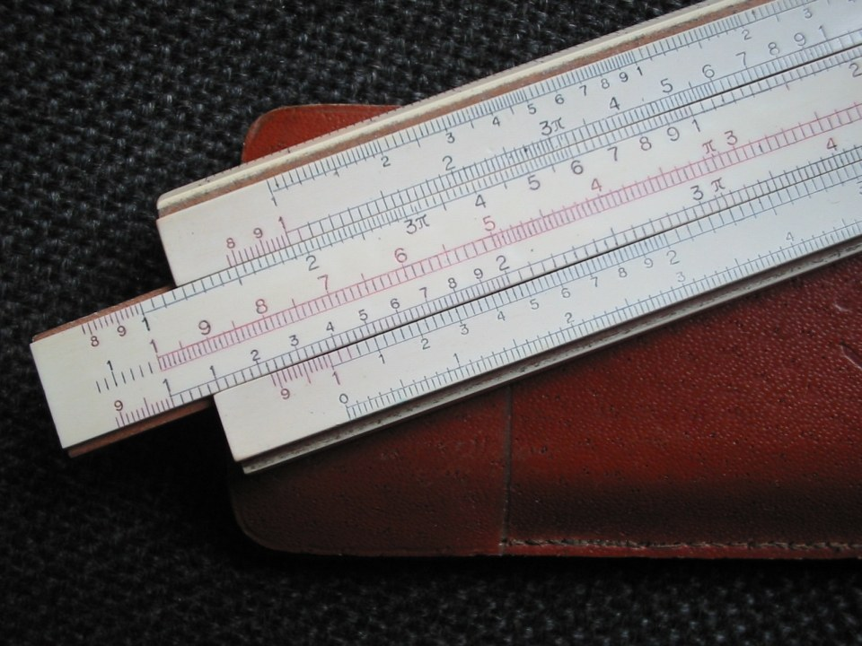

第38回
黒い水面に、雨粒の輪が重なって広がっていく。
Susan Martin（2013年、雨粒が作る水面の波紋）／CC BY 3.0／Wikimedia Commons（横長に切り出した）
第28回・第29回で、微分方程式を1つずつ「型」に分けて解いた。この回では別の道を通る。関数 $f(t)$ に $e^{-st}$ を掛けて $0$ から $\infty$ まで積分した新しい関数 $F(s)$ を作る（ラプラス変換）。すると、微分は $s$ を掛けることに化け、微分方程式は $s$ についての代数方程式になり、初期条件は最初から式に入る。代数方程式を解いて、変換表を逆に読めば、元の関数が戻る。対数が掛け算を足し算に変えたのと同じ「写して、解いて、戻す」の発想である。
前提は、第10回（定積分・部分積分）、第28回（1階の微分方程式）、第29回（2階線形定数係数）、第34回（複素数とオイラーの公式）。時間を表す文字は $t$ とし、微分 $\dfrac{d}{dt}$ は $'$（ダッシュ）で書く。
範囲はラプラス変換の定義・性質の導出・微分方程式への応用まで。デルタ関数・ステップ関数・たたみ込み・伝達関数は第39回へ送る。逆変換を複素積分と留数で書く一般式（ブロムウィッチ積分）は、第35回の留数を使うが、ここでは表を逆に読む方法に絞る。詳しい扱いは、応用数学Ⅱ（AM2）の第13回（ラプラス変換とラプラス逆変換）・第14回（微分方程式・偏微分方程式への応用とたたみ込み）、および Lebl Notes on Diffy Qs の第6章（6.1 変換の定義と表、6.2 微分則と微分方程式）にある。
なお、この回では $s$ を実数として計算する（$s$ を複素数にする見方は AM2 第13回にあり、結果の式は同じ形のまま使える）。
最初に、この回で新しく説明する記号と、前の回で説明済みの記号を分けて並べる。右の列の「→」で説明のある場所へ飛べる。
| 記号 | 読み方 | ざっくりした意味 | 説明 |
|---|---|---|---|
| $\displaystyle\int_0^\infty f(t)\,dt$（広義積分） | インテグラル・ゼロ・から・むげんだい | 上端を $T$ とおいて $T\to\infty$ とした極限 | →1.2 |
| $\mathcal L\{f\}(s)=F(s)$（ラプラス変換） | エル、エフ・オブ・エス | $e^{-st}f(t)$ を $0$ から $\infty$ まで積分して、$s$ の関数にしたもの | →1.3 |
| 省略の段階（ラプラス変換の書き方） | ― | $\lim_{T\to\infty}\int_0^T$ から $\mathcal L\{f\}$ まで | →1.4 |
| 指数位数、$s\gt\alpha$（収束域） | しすういすう、しゅうそくいき | $\lvert f(t)\rvert\le Me^{\alpha t}$。変換が存在する $s$ の範囲 | →1.6 |
| 線形性 $\mathcal L\{af+bg\}$ | せんけいせい | 和と定数倍は、変換の外に出せる | →2.1 |
| 第一移動 $\mathcal L\{e^{at}f\}=F(s-a)$ | だいいちいどう | $e^{at}$ を掛けると $s$ が $a$ ずれる | →2.4 |
| $\mathcal L^{-1}\{F\}$（逆変換） | エル・インバース | $F(s)$ から元の $f(t)$ を戻す | →2.6 |
| 微分則 $\mathcal L\{f'\}=sF(s)-f(0)$ | びぶんそく | 微分は $s$ を掛けて、初期値を引くことに化ける | →3.2 |
| 積分則 $\mathcal L\bigl\{\int_0^tf\bigr\}=F(s)/s$ | せきぶんそく | 積分は $s$ で割ることに化ける | →3.5 |
| $t$ 倍則 $\mathcal L\{tf\}=-F'(s)$ | ティーばいそく | $t$ を掛けると $s$ で微分して符号を変える | →3.6 |
| 部分分数分解 | ぶぶんぶんすうぶんかい | 1つの分数を、分母が簡単な分数の和に分ける | →4.2 |
| 記号 | 意味 | 初出 |
|---|---|---|
| $\displaystyle\lim_{T\to\infty}$、$\infty$ | 極限、限りなく大きい | 第6回、∞ |
| $e^{x}$、指数関数 | ネイピア数 $e$ を底とする指数関数 | 第3回 |
| $\displaystyle\int_a^b f(t)\,dt$、$[F]_a^b$ | 定積分、原始関数の差 | 第10回、評価バー |
| 基本定理、原始関数 | 積分と微分の関係 | 基本定理、原始関数 |
| 部分積分 | $\int uv'=uv-\int u'v$ | 第10回 |
| 微分方程式、初期値問題、解 | 未知関数とその導関数の関係式／初期値つき／関係式を満たす関数 | 第28回、初期値問題、解 |
| 積分因子（1階線形の解法） | 両辺に掛けて左辺を積の微分にする関数 | 第28回 |
| 2階線形定数係数、特性方程式 $\lambda^2+\cdots=0$ | $ay''+by'+cy=0$ と、それに $e^{\lambda t}$ を入れて得る代数方程式 | 第29回、特性方程式 |
| $\omega_n$、$\zeta$ | 固有角振動数、減衰比 | $\omega_n$、$\zeta$ |
| 共振、定常応答 | 外力の周波数が固有周波数に合うと振幅が増える／十分時間がたった後の応答 | 共振、定常 |
| 安定性 | 平衡点から少しずれても戻るか | 第32回 |
| $i$、$e^{i\theta}=\cos\theta+i\sin\theta$、$\lvert z\rvert$ | 虚数単位、オイラーの公式、絶対値 | 第34回、オイラーの公式、絶対値 |
| $:=$、$=$ | 左の名前を右の式で決める／等しい | 第1回 |
第28回・第29回で、微分方程式は「型」ごとに解いた。1階線形なら積分因子、2階線形定数係数なら特性方程式と、解き方を型ごとに覚える必要があった。さらに、解の形を決めたあとで初期条件から定数を合わせる作業が別に残った。外力がある場合（第30回）は、特解を探す作業も加わった。
ここで、もっと古い発想を思い出す。対数は、掛け算 $a\times b$ を足し算 $\log a+\log b$ に写し、足し算を計算してから、指数で元に戻した。難しい操作（掛け算）を、易しい操作（足し算）に写して解き、戻す。
微分方程式でも同じことができないか。微分（難しい）を、掛け算（易しい）に写す変換があれば、微分方程式は代数方程式に化ける。代数方程式は第1〜5回の知識だけで解ける。図1.1 は、この「写して、解いて、戻す」の地図である。
図1.1 を見る。下の直接の道（微分方程式を型で解く）は第28・29回でやった。上の回り道が、この回の道である。
ラプラス変換は $0$ から $\infty$ までの積分で定義する。第10回の定積分 $\int_a^b$ は、$a,b$ が有限の数の場合だけを扱った。上端が $\infty$ のときは意味を決め直す必要がある。覚えている人は飛ばしてよいが、ここは本教材で初めて書くので、省略せずに定義する。
①読み方：「インテグラル ゼロ から むげんだい まで エフ・オブ・ティー ディー・ティー」。
②日本語での意味：上端を有限の数 $T$ にして定積分 $\int_0^T$ を計算し、$T$ を限りなく大きくしたときに近づく値。近づく先が1つの数に決まるとき「収束する」といい、決まらない（限りなく大きくなる、振動するなど）ときは「発散する」という。
③省略していない書き方：
$$ \int_0^\infty f(t)\,dt\ :=\ \lim_{T\to\infty}\int_0^T f(t)\,dt $$
右辺の $\int_0^T f(t)\,dt$ は第10回の定積分（$T$ は有限の正の数）、$\lim_{T\to\infty}$ は第6回の極限で、この極限が有限の数として存在するときだけ左辺に意味がある。
④使われる場所：ラプラス変換（この回）、フーリエ変換（応用数学Ⅱ）、確率の密度関数の全体の積分（確率統計）。
最小の具体例：$\int_0^\infty e^{-t}\,dt$。
① まず上端を有限の $T$ にする：$\displaystyle\int_0^Te^{-t}\,dt$。
② 原始関数は $-e^{-t}$（微分して $e^{-t}$ になる、第10回）。
③ 基本定理で $[-e^{-t}]_0^T=-e^{-T}-(-e^{0})$。
④ $e^{0}=1$ なので $=1-e^{-T}$。
⑤ $T\to\infty$ のとき $e^{-T}=\dfrac1{e^{T}}\to0$。
⑥ よって $\displaystyle\int_0^\infty e^{-t}\,dt=\lim_{T\to\infty}(1-e^{-T})=1-0=1$。
図1.2 を見る。上は被積分関数 $e^{-t}$、下は「$0$ から $T$ までの面積」$1-e^{-T}$ を $T$ の関数として描いたもの。面積は増え続けるが、$1$ を超えない。
動機に戻る。関数 $f(t)$ を、別の姿に写したい。写し方は「$f(t)$ に重み $e^{-st}$ を掛けて、$t=0$ から $\infty$ まで足す」である。$s$ は自由に選べる定数（パラメータ）で、$s$ を変えるたびに答えが変わる。つまり、答えは $s$ の関数になる。
重み $e^{-st}$（$s\gt0$ のとき）は、$t$ が大きくなるほど急に小さくなる窓の役をする。$s$ が大きいほど窓は狭く、$t=0$ の近くだけを見る。$s$ が小さいほど窓は広く、遠い未来まで見る。図1.3 を見る。
①読み方：「エル」（ラプラス変換を表す文字）、「エフ・オブ・エス」。$\mathcal L\{f\}$ は「エル・オブ・エフ」と読む。
②日本語での意味：$t\ge0$ で決まった関数 $f(t)$ に、重み $e^{-st}$ を掛けて $t=0$ から $\infty$ まで積分した結果。結果は $s$ だけの関数になる。変換前の関数を小文字（$f,y$）、変換後を大文字（$F,Y$）で書く習慣がある。
③省略していない書き方：
$$ \mathcal L\{f\}(s)\ :=\ \lim_{T\to\infty}\int_0^{T}e^{-st}\,f(t)\,dt $$
ここで $t$ は時間を表す変数（積分の内側だけで使う）、$s$ は積分のあとに残る変数、$f(t)$ は変換される関数、$e^{-st}$ は指数関数、$dt$ は $t$ で積分するという印、$\lim_{T\to\infty}\int_0^T$ は 1.2 の広義積分である。
④使われる場所：制御工学（伝達関数）、電気回路の過渡現象、機械振動（第30回の続き）、確率（モーメント母関数に似た形）。
注意：$F(s)$ の中の $t$ は、積分の中だけの変数なので、結果に $t$ は残らない。「$F$ は $t$ の関数」ではなく「$F$ は $s$ の関数」である。
| 段階 | 書き方 | 省いたもの | 省いても誤解が起きない理由（と、起きる場面） |
|---|---|---|---|
| S0 | $\displaystyle F(s)=\lim_{T\to\infty}\int_0^{T}e^{-st}f(t)\,dt$ | （省略なし） | 定義そのもの。極限が存在する $s$ でだけ意味をもつ。 |
| S1 | $\displaystyle F(s)=\int_0^{\infty}e^{-st}f(t)\,dt$ | $\lim_{T\to\infty}$ と $T$ | 1.2 で $\int_0^\infty$ をこの意味と決めたから。注意：収束しない $s$ では、この式に意味がない。 |
| S2 | $\mathcal L\{f\}(s)$ | 積分の式そのもの | 「$\mathcal L$ は S1 の操作の名前」と決めたから。注意：$\mathcal L\{f(t)\}$ のように中に $t$ を書く流儀もある（1.7）。 |
| S3 | $\mathcal L\{f\}$ または $F$ | 引数 $(s)$ | 変換後は $s$ の関数だと文脈で決まるから。注意：$F$ と書いたときは、小文字 $f$ との対応を忘れない。 |
この回では、計算するとき S1 を、結果を述べるとき S2〜S3 を使う。迷ったらこの表に戻る。
(a) $f(t)=1$（定数関数）。$s\gt0$ とする。
① 定義 S0：$\displaystyle\mathcal L\{1\}=\lim_{T\to\infty}\int_0^Te^{-st}\cdot1\,dt$。
② $1$ を掛けても変わらないので、被積分関数は $e^{-st}$。
③ 原始関数：$\dfrac{d}{dt}\left(-\dfrac{e^{-st}}{s}\right)=-\dfrac{(-s)e^{-st}}{s}=e^{-st}$。
④ 基本定理：$\left[-\dfrac{e^{-st}}{s}\right]_0^T=-\dfrac{e^{-sT}}{s}+\dfrac{e^{0}}{s}=\dfrac{1-e^{-sT}}{s}$。
⑤ $s\gt0$ なので $T\to\infty$ で $e^{-sT}\to0$。
⑥ よって $\displaystyle\mathcal L\{1\}=\dfrac{1-0}{s}=\dfrac1s$ （$s\gt0$）。
⑦ 確かめ：1.2 の $\int_0^\infty e^{-t}\,dt=1$ は、$s=1$ の場合。上の結果に $s=1$ を入れると $\frac11=1$ ✓。
図1.4 を見る。$s=2$ のとき、重み $e^{-2t}$ の曲線の下の面積が $\frac12$ になる。
注意：$F(s)=\dfrac1s$ は $s=0$ では定義されないが、積分のほうも $s=0$ では $\int_0^\infty1\,dt$ が発散する。式の都合と積分の都合が一致している。
(b) $f(t)=e^{at}$（$a$ は実数の定数）。
① $e^{-st}\cdot e^{at}=e^{-(s-a)t}$。
② (a) の $s$ を $s-a$ に置き換えたものと同じ形。ただし、(a) の⑤で使った「$s\gt0$」は、ここでは「$s-a\gt0$」、つまり $s\gt a$ になる。
③ 原始関数 $-\dfrac{e^{-(s-a)t}}{s-a}$ で、$[\ ]_0^T=\dfrac{1-e^{-(s-a)T}}{s-a}$。
④ $s\gt a$ なら $T\to\infty$ で $e^{-(s-a)T}\to0$。よって
$$ \mathcal L\{e^{at}\}=\frac1{s-a}\qquad(s\gt a) $$
⑤ 確かめ：$a=0$ のとき $e^{0t}=1$ で、結果は $\frac1s$。(a) と一致 ✓。
図1.5 を見る。$a=1$ の例。$s=2$（$s\gt a$）では重み付きの被積分関数 $e^{-(s-a)t}=e^{-t}$ が減って面積が有限。$s=0.5$（$s\lt a$）では $e^{0.5t}$ が増え続けて、面積が有限にならない。
1.5 で、変換の値は $s$ の範囲によって有限になったりならなかったりした。この節で、範囲の見積もり方を決める。
①読み方：「しすう いすう アルファ」、「しゅうそくいき」。
②日本語での意味：$f(t)$ が、ある指数関数 $Me^{\alpha t}$ を超えて大きくならない、ということ。このとき $s$ を $\alpha$ より大きくとれば、$e^{-st}$ が $f$ の増加に勝つので、変換の積分が有限になる。
③省略していない書き方：ある正の定数 $M$ と実数 $\alpha$ が存在して、すべての $t\ge0$ について
$$ \lvert f(t)\rvert\ \le\ M\,e^{\alpha t} $$
が成り立つとき、$f$ は指数位数 $\alpha$ をもつという。このとき、すべての $s\gt\alpha$ で $\mathcal L\{f\}(s)$ が存在する（理由は下）。
④使われる場所：ラプラス変換が使える関数の条件。制御工学で現れる関数（多項式・指数関数・$\sin,\cos$ とそれらの積・和）はほとんどが指数位数をもつ。
理由（$s\gt\alpha$ なら積分が有限になる）。
① $\lvert e^{-st}f(t)\rvert\le e^{-st}\cdot Me^{\alpha t}=M\,e^{-(s-\alpha)t}$。
② 右辺の $0$ から $\infty$ までの積分は、1.5(b) と同じ計算で $\dfrac{M}{s-\alpha}$（$s\gt\alpha$）。
③ 被積分関数の大きさが、積分が有限な関数で上から押さえられるので、$\int_0^\infty e^{-st}f(t)\,dt$ は絶対収束し、有限の値になる。
図1.6 を見る。数直線の上で、$s$ の許される範囲（収束域）を太線で示した。$1$ と $\sin t$ は $s\gt0$、$e^{t}$ は $s\gt1$、$e^{-t}$ は $s\gt-1$、$e^{t^2}$ はどんな $s$ でも変換できない。
$\mathcal L\{e^{t}\}=\dfrac1{s-1}$ は、式だけを見れば $s=0.5$ でも値 $-2$ が出る。しかし積分は $s=0.5$ で発散している（図1.5 の下の段）。式 $\frac1{s-1}$ は、収束域 $s\gt1$ の外へ式のまま延ばしたものにすぎない。この回の計算では、答えに「$s\gt\cdots$」を添える習慣をつける。
| どこで | 書き方 | この教材との違い |
|---|---|---|
| この教材 | $\mathcal L\{f\}(s)=F(s)$、変数は時間 $t$ | ― |
| AM2 第13回 | $\mathcal L[f(x)]=\hat f(s)$、変数 $x$、$s=s_r+is_i$（複素数） | 大文字ではなくハット。変数が $x$ になる。$s$ を複素数として扱う |
| Lebl | $\mathcal L\{f(t)\}=F(s)$ | 括弧の中に $t$ を書く |
| 制御工学 | 積分の下限を $0^-$（$0$ の直前）にする | $t=0$ に尖った入力（デルタ関数）があっても落とさないため。第39回で扱う。この回の $f$ は連続なので $0$ と $0^-$ は同じ |
| 電気・制御 | 虚数単位に $j$ | 第34回で述べたとおり、$i$ のかわり |
どれも同じ操作の別の書き方である。他の資料を読むときは、この表に戻って読み替える。
微分方程式を解くには、よく出る関数の変換を知っている必要がある。暗記するのではなく、1.5 の2つから、規則を使って導く。
PHOTO 1｜現実

目盛りを刻んだ尺を滑らせて、数の対応を読み取る道具である。
Karoly Szabo の計算尺（2007年）／CC BY-SA 2.5／Wikimedia Commons（縮小した）
MITATE 1｜見立て
金属の札のついた引き出しが、重ねてしまわれている。
Smirkybec（2024年、ダブリンの保管庫の活版印刷の引き出し）／CC BY-SA 4.0／Wikimedia Commons（縮小した）
①読み方：「せんけいせい」。
②日本語での意味：和の変換は変換の和、定数倍の変換は変換の定数倍。
③省略していない書き方：$f,g$ が変換できる関数、$a,b$ が定数、$F=\mathcal L\{f\}$、$G=\mathcal L\{g\}$ のとき、$f,g$ の収束域が重なる $s$ で
$$ \mathcal L\{a\,f+b\,g\}(s)=a\,\mathcal L\{f\}(s)+b\,\mathcal L\{g\}(s) $$
④使われる場所：どの変換表の計算でも。第16回の線形写像の「足して掛ける」と同じ形である。
理由（ステップごと）。
① 定義：$\displaystyle\mathcal L\{af+bg\}=\int_0^\infty e^{-st}\bigl(af(t)+bg(t)\bigr)dt$。
② 分配法則で $e^{-st}$ を中に入れる：$\displaystyle\int_0^\infty\bigl(a\,e^{-st}f(t)+b\,e^{-st}g(t)\bigr)dt$。
③ 積分は和と定数倍を外に出せる（第10回の定積分の性質。極限 $T\to\infty$ でも同じ）：$a\int_0^\infty e^{-st}f\,dt+b\int_0^\infty e^{-st}g\,dt$。
④ それぞれが $F(s),G(s)$ だから $aF(s)+bG(s)$。∎
これで、定数 $a$ の積と和は、変換の外に出せる。積 $f\cdot g$ は別で、$\mathcal L\{fg\}=F\cdot G$ にはならない（2.7）。
$n=0,1,2,\dots$ について、$s\gt0$ で $\mathcal L\{t^n\}=\dfrac{n!}{s^{n+1}}$ を示す。まず $n=1$ で手を動かす。
$n=1$：$\mathcal L\{t\}$
① $\displaystyle\int_0^Te^{-st}\,t\,dt$ に部分積分を使う。$u=t$、$v'=e^{-st}$ とおくと $u'=1$、$v=-\dfrac{e^{-st}}s$。
② 部分積分：$\bigl[uv\bigr]_0^T-\int_0^Tu'v\,dt=\left[-\dfrac{t\,e^{-st}}s\right]_0^T+\dfrac1s\int_0^Te^{-st}dt$。
③ 境界項：$-\dfrac{T e^{-sT}}s-0$。$T\to\infty$ で $Te^{-sT}\to0$（指数関数が減る速さは、$T$ が増える速さに勝つ）。
④ 残り：$\dfrac1s\int_0^\infty e^{-st}dt=\dfrac1s\cdot\dfrac1s$（1.5(a)）。
⑤ よって $\mathcal L\{t\}=\dfrac1{s^2}$。
一般の $n$。$n=1$ と同じ部分積分を $t^n$ に対して行う。
① $u=t^n$、$v'=e^{-st}$、$u'=nt^{n-1}$、$v=-\dfrac{e^{-st}}s$。
② 部分積分：$\left[-\dfrac{t^ne^{-st}}s\right]_0^\infty+\dfrac ns\int_0^\infty t^{n-1}e^{-st}dt$。
③ 境界項は、上端で $T^ne^{-sT}\to0$、下端で $n\ge1$ なら $0^n=0$。両方とも $0$。
④ 残りの積分は $\mathcal L\{t^{n-1}\}$ そのもの：$\mathcal L\{t^n\}=\dfrac ns\,\mathcal L\{t^{n-1}\}$。
⑤ これを $n,n-1,\dots,1$ と順にたどる。$\mathcal L\{t^0\}=\mathcal L\{1\}=\dfrac1s$ から始めて
$$ \mathcal L\{t\}=\frac1s\cdot\frac1s,\quad \mathcal L\{t^2\}=\frac2s\cdot\frac1{s^2},\quad \mathcal L\{t^3\}=\frac3s\cdot\frac2{s^3}=\frac{6}{s^4},\ \dots $$
⑥ 係数は $n\cdot(n-1)\cdots1=n!$、分母の $s$ は1回ごとに1つ増えて $s^{n+1}$。
$$ \mathcal L\{t^n\}=\frac{n!}{s^{n+1}}\qquad(s\gt0) $$
図2.1 を見る。$\frac1s\to\frac1{s^2}\to\frac2{s^3}\to\frac6{s^4}$ と、1段ごとに「$n/s$ を掛ける」だけで進む。
$\omega$ は正の定数（角周波数）。$\cos\omega t$ に $e^{-st}$ を掛けて積分すると部分積分を2回行うことになるが、第34回のオイラーの公式を使えば、1.5(b) の結果だけで済む。
① オイラーの公式：$e^{i\omega t}=\cos\omega t+i\sin\omega t$、$e^{-i\omega t}=\cos\omega t-i\sin\omega t$。
② 2式を足して2で割る：$\cos\omega t=\dfrac{e^{i\omega t}+e^{-i\omega t}}2$。
③ 1.5(b) の $\mathcal L\{e^{at}\}=\frac1{s-a}$ で、$a=i\omega$ と置いてよいか。積分 $\int_0^\infty e^{-(s-i\omega)t}dt$ の被積分関数の大きさは $\lvert e^{-st}e^{i\omega t}\rvert=e^{-st}\cdot1$（第34回：$\lvert e^{i\theta}\rvert=1$）なので、$s\gt0$ で同じ計算が通る。結果は $\mathcal L\{e^{i\omega t}\}=\dfrac1{s-i\omega}$。
④ 同じく $\mathcal L\{e^{-i\omega t}\}=\dfrac1{s+i\omega}$。
⑤ 線形性（2.1）：$\mathcal L\{\cos\omega t\}=\dfrac12\left(\dfrac1{s-i\omega}+\dfrac1{s+i\omega}\right)$。
⑥ 通分：$\dfrac12\cdot\dfrac{(s+i\omega)+(s-i\omega)}{(s-i\omega)(s+i\omega)}=\dfrac12\cdot\dfrac{2s}{s^2-(i\omega)^2}$。
⑦ $(i\omega)^2=i^2\omega^2=-\omega^2$ より分母は $s^2+\omega^2$。
$$ \mathcal L\{\cos\omega t\}=\frac{s}{s^2+\omega^2},\qquad \mathcal L\{\sin\omega t\}=\frac{\omega}{s^2+\omega^2}\qquad(s\gt0) $$
⑧ $\sin$ の式は、⑤ の和を差に、$\frac12$ を $\frac1{2i}$ にして：$\dfrac1{2i}\cdot\dfrac{(s+i\omega)-(s-i\omega)}{s^2+\omega^2}=\dfrac1{2i}\cdot\dfrac{2i\omega}{s^2+\omega^2}=\dfrac{\omega}{s^2+\omega^2}$。
⑨ 確かめ：$\omega\to0$ の極限で $\cos0=1$ → $\frac{s}{s^2}=\frac1s$ ✓。$\sin0=0$ → $\frac{0}{s^2}=0$ ✓。
図2.2 を見る。上は $\sin2t$ の波、下はその変換 $\frac{2}{s^2+4}$。振動する関数が、$s$ の滑らかな分数式になる。
同じ線形性で、$\cosh at=\frac{e^{at}+e^{-at}}2$ と $\sinh at=\frac{e^{at}-e^{-at}}2$ は $\dfrac{s}{s^2-a^2}$ と $\dfrac{a}{s^2-a^2}$（$s\gt\lvert a\rvert$）になる（演習の確認にも使う）。
①読み方：「だいいち いどう」。
②日本語での意味：$f(t)$ に $e^{at}$ を掛けた関数の変換は、元の変換 $F(s)$ の $s$ を $s-a$ に置き換えたもの。
③省略していない書き方：$F(s)=\mathcal L\{f\}(s)$ が $s\gt\alpha$ で存在するとき、$a$ を実数として
$$ \mathcal L\{e^{at}f(t)\}(s)=F(s-a)\qquad(s\gt\alpha+a) $$
④使われる場所：減衰振動 $e^{-\zeta\omega_nt}\sin\omega_dt$（第29回）の変換を、$\sin$ の変換から作る。
理由。
① 定義：$\displaystyle\int_0^\infty e^{-st}\,e^{at}f(t)\,dt$。
② 指数の和：$e^{-st}e^{at}=e^{-(s-a)t}$。
③ 被積分関数は $e^{-(s-a)t}f(t)$。これは「$s$ のところに $s-a$ を入れた定義の式」そのもの。
④ よって $=F(s-a)$。∎
使う例：$\mathcal L\{e^{-t}\sin2t\}$。$f=\sin2t$ で $F(s)=\dfrac{2}{s^2+4}$（2.3）。$a=-1$ だから $s$ を $s-(-1)=s+1$ に置き換えて
$$ \mathcal L\{e^{-t}\sin2t\}=\frac{2}{(s+1)^2+4}\qquad(s\gt-1) $$
同じく $\mathcal L\{e^{-t}\cos2t\}=\dfrac{s+1}{(s+1)^2+4}$。べき関数でも：$\mathcal L\{te^{-t}\}=\dfrac1{(s+1)^2}$（$\mathcal L\{t\}=\frac1{s^2}$ の $s$ を $s+1$ に）、$\mathcal L\{t^2e^{3t}\}=\dfrac{2}{(s-3)^3}$（$s\gt3$）。
図2.3 を見る。上段（時間の側）では $e^{-t}$ が波に減衰の包絡線をかぶせ、下段（$s$ の側）では山の位置が $s=0$ から $s=-1$ へ左にずれる。
ここまでに導いたものを1枚にまとめる。右の列は導出の場所。
| $f(t)$（$t\ge0$） | $F(s)=\mathcal L\{f\}$ | 収束域 | 導出 |
|---|---|---|---|
| $1$ | $\dfrac1s$ | $s\gt0$ | 1.5(a) |
| $e^{at}$ | $\dfrac1{s-a}$ | $s\gt a$ | 1.5(b) |
| $t^n$（$n=0,1,2,\dots$） | $\dfrac{n!}{s^{n+1}}$ | $s\gt0$ | 2.2 |
| $\cos\omega t$ | $\dfrac{s}{s^2+\omega^2}$ | $s\gt0$ | 2.3 |
| $\sin\omega t$ | $\dfrac{\omega}{s^2+\omega^2}$ | $s\gt0$ | 2.3 |
| $\cosh at$、$\sinh at$ | $\dfrac{s}{s^2-a^2}$、$\dfrac{a}{s^2-a^2}$ | $s\gt\lvert a\rvert$ | 2.3 の最後 |
| $e^{at}f(t)$ | $F(s-a)$ | $s\gt\alpha+a$ | 2.4（第一移動） |
| $e^{at}\sin\omega t$、$e^{at}\cos\omega t$ | $\dfrac{\omega}{(s-a)^2+\omega^2}$、$\dfrac{s-a}{(s-a)^2+\omega^2}$ | $s\gt a$ | 2.4 |
| $t^ne^{at}$ | $\dfrac{n!}{(s-a)^{n+1}}$ | $s\gt a$ | 2.4 |
図2.4 は、この表の代表を波形と式のカードにしたもの。右の分数式の形（分母が $s$ の何次か、$s^2+\omega^2$ という形）を見て、元の波形を思い浮かべる練習になる。
①読み方：「エル・インバース エフ」（「エル の マイナス1乗」と読む人もいる）。
②日本語での意味：$\mathcal L\{f\}=F$ となる元の関数 $f(t)$ を返す操作。
③省略していない書き方：
$$ f(t)=\mathcal L^{-1}\{F\}(t)\quad\Longleftrightarrow\quad \mathcal L\{f\}(s)=F(s) $$
右肩の $-1$ は第3回の逆関数と同じ意味の記号で、「べき乗の $-1$ 乗」ではない。
④使われる場所：変換して代数で解いたあと、元の関数に戻すとき。
2つの連続な関数が同じ変換をもつなら、その2つの関数は等しい（一意性。証明は AM2 第13回）。したがって、変換表のどの行も逆向きに読んでよい。たとえば $\mathcal L^{-1}\left\{\dfrac1{s-3}\right\}=e^{3t}$、$\mathcal L^{-1}\left\{\dfrac{5}{s^2+25}\right\}=\sin5t$。逆変換も線形：$\mathcal L^{-1}\{aF+bG\}=a\mathcal L^{-1}\{F\}+b\mathcal L^{-1}\{G\}$（2.1 の式を左右逆に読むだけ）。
なお、逆変換を複素積分で与える一般式（ブロムウィッチ積分）もあり、留数（第35回）で計算できる。AM2 第13回が詳しい。この回では使わない。
$\mathcal L\{t\cdot e^{-t}\}=\dfrac1{(s+1)^2}$ だが、$\mathcal L\{t\}\cdot\mathcal L\{e^{-t}\}=\dfrac1{s^2}\cdot\dfrac1{s+1}=\dfrac1{s^2(s+1)}$ で、一致しない。和と定数倍は外に出せる（線形性）が、積は出せない。「変換の積」に対応する時間側の演算は、単純な積ではなく「たたみ込み」で、第39回で扱う。
$y''+3y'+2y=0$ のような微分方程式の両辺を変換するには、$\mathcal L\{y'\}$ と $\mathcal L\{y''\}$ を $\mathcal L\{y\}$ で書き表せなければならない。もし $\mathcal L\{y'\}$ が $s\cdot\mathcal L\{y\}$ のような掛け算で書けるなら、微分方程式の微分の記号が消える。
①読み方：「びぶんそく」。「エル・オブ・エフ・ダッシュ イコール エス エフ・オブ・エス マイナス エフ・オブ・ゼロ」。
②日本語での意味：関数を微分してから変換した結果は、元の変換に $s$ を掛けて、$t=0$ での値（初期値）を引いたものになる。初期値が最初から式に入るのが、この規則の最大の特長である。
③省略していない書き方：$f$ が $t\ge0$ で連続、$f'$ が区分的に連続（有限個の折れ目まで）で、$f$ が指数位数 $\alpha$ をもつとき、$s\gt\alpha$ で
$$ \mathcal L\{f'\}(s)=s\,\mathcal L\{f\}(s)-f(0) $$
2階微分は、これを2回使って $\mathcal L\{f''\}(s)=s^2\mathcal L\{f\}(s)-s\,f(0)-f'(0)$。
④使われる場所：微分方程式を代数方程式に直すとき（第4章）。制御工学の伝達関数（第39回）。
導出（部分積分、第10回）。
① 定義：$\displaystyle\mathcal L\{f'\}=\lim_{T\to\infty}\int_0^Te^{-st}f'(t)\,dt$。
② 部分積分の準備：$u=e^{-st}$、$v'=f'(t)$ とおくと $u'=-s\,e^{-st}$、$v=f(t)$。
③ 部分積分 $\int uv'=[uv]-\int u'v$：$\displaystyle\Bigl[e^{-st}f(t)\Bigr]_0^T-\int_0^T(-s\,e^{-st})f(t)\,dt$。
④ 符号を整える：$\displaystyle\Bigl[e^{-st}f(t)\Bigr]_0^T+s\int_0^Te^{-st}f(t)\,dt$。
⑤ 境界項：$[\,]_0^T=e^{-sT}f(T)-e^{0}f(0)=e^{-sT}f(T)-f(0)$。
⑥ $T\to\infty$ のとき、$f$ が指数位数 $\alpha$ で $s\gt\alpha$ なら $\lvert e^{-sT}f(T)\rvert\le Me^{-(s-\alpha)T}\to0$（1.6 の見積もり）。
⑦ 残りの積分は $F(s)$ の定義そのもの。よって $\mathcal L\{f'\}=0-f(0)+sF(s)$。∎
2階。
⑧ $f'$ を一つの関数 $g$ と見て微分則を当てる：$\mathcal L\{g'\}=s\,\mathcal L\{g\}-g(0)$。$g=f'$ だから $\mathcal L\{f''\}=s\,\mathcal L\{f'\}-f'(0)$。
⑨ $\mathcal L\{f'\}=sF-f(0)$ を代入（1回目の結果）：$s\bigl(sF-f(0)\bigr)-f'(0)$。
⑩ 展開：$\mathcal L\{f''\}=s^2F(s)-s\,f(0)-f'(0)$。
$f(t)=e^{-t}$ で確かめる。$f'(t)=-e^{-t}$、$f(0)=1$、$F(s)=\dfrac1{s+1}$。
① 右辺：$sF(s)-f(0)=\dfrac{s}{s+1}-1=\dfrac{s-(s+1)}{s+1}=-\dfrac1{s+1}$。
② 左辺：$\mathcal L\{-e^{-t}\}=-\dfrac1{s+1}$（線形性と 1.5(b)）。
③ 一致 ✓。
図3.1 を見る。$s=2$ では、左辺は $e^{-2t}\cdot(-e^{-t})=-e^{-3t}$ の下の面積 $-\frac13$、右辺は $2\cdot\frac13-1=-\frac13$。確かに等しい。
さらに $f=\sin2t$ でも：$f'=2\cos2t$、$\mathcal L\{f'\}=\frac{2s}{s^2+4}$。右辺は $s\cdot\frac2{s^2+4}-\sin0=\frac{2s}{s^2+4}$ ✓（draft/check_38.py で sympy でも確認）。
図3.2 を見る。時間の側で $y,y',y''$ と微分していくことが、$s$ の側では $Y$、$sY-y(0)$、$s^2Y-sy(0)-y'(0)$ と、$s$ を掛けて初期値を引く作業に対応する。
変換は $t=0$ から積分を始める。$f'$ は「$f$ の変化」なので、$t=0$ での出発点 $f(0)$ が分からないと、$f'$ だけから $f$ は決まらない。部分積分で出る境界項 $-f(0)$ は、「出発点を $s$ の側にも運ぶ」役である。だから初期値が自然に式の中に入る。第28・29回では「一般解を求めてから初期条件で定数を決める」と2段階だったが、ラプラス変換では初期条件を最初から使って、定数を求める手間が消える。
①読み方：「せきぶんそく」。$\tau$ は「タウ」と読み、積分の内側だけで使うギリシャ文字の変数。
②日本語での意味：$0$ から $t$ までの積分を変換すると、元の変換を $s$ で割ったものになる。微分が「$s$ を掛ける」なら、積分は「$s$ で割る」。
③省略していない書き方：$g(t):=\displaystyle\int_0^tf(\tau)\,d\tau$ とおくと
$$ \mathcal L\{g\}(s)=\frac{1}{s}\,\mathcal L\{f\}(s) $$
ここで $\tau$ は積分の中だけの変数、$t$ は積分の上端の変数である。
④使われる場所：逆変換で $\frac1s$ が掛かった形が出たとき。電気回路の（コンデンサの）電圧と電流の関係。
理由。
① $g(t)=\int_0^tf(\tau)\,d\tau$ なら、基本定理（前半）で $g'(t)=f(t)$、また $g(0)=\int_0^0=0$。
② 微分則：$\mathcal L\{g'\}=s\,\mathcal L\{g\}-g(0)=s\,\mathcal L\{g\}-0$。
③ 左辺は $\mathcal L\{f\}=F(s)$。よって $F(s)=s\,\mathcal L\{g\}$、両辺を $s$ で割って $\mathcal L\{g\}=F(s)/s$。∎
使い方の例：$\mathcal L^{-1}\left\{\dfrac1{s(s^2+1)}\right\}$。$\frac1{s^2+1}=\mathcal L\{\sin t\}$ に $\frac1s$ が掛かっているので、$\int_0^t\sin\tau\,d\tau=1-\cos t$。
①読み方：「ティーばいそく」。$F'(s)$ は $F$ を $s$ で微分したもの（「エフ・ダッシュ・エス」）。
②日本語での意味：$f(t)$ に $t$ を掛けて変換すると、$F(s)$ を $s$ で微分して符号を逆にしたものになる。
③省略していない書き方：
$$ \mathcal L\{t\,f(t)\}(s)=-\frac{d}{ds}F(s) $$
④使われる場所：共振（外力の周波数が固有周波数に一致するとき）の解に $t\sin\omega t$ が現れる。演習のC問題。
理由。
① $F(s)=\int_0^\infty e^{-st}f(t)\,dt$ を $s$ で微分する。積分の中で $s$ に依存するのは $e^{-st}$ だけで、$\dfrac{\partial}{\partial s}e^{-st}=-t\,e^{-st}$（第11回の偏微分：$t$ を固定して $s$ で微分）。
② 微分と積分の順序を入れ替える（収束域の内側では許される。理由は AM2 第13回）：$F'(s)=\int_0^\infty(-t)\,e^{-st}f(t)\,dt=-\mathcal L\{tf\}$。
③ 符号を移して $\mathcal L\{tf\}=-F'(s)$。∎
例：$f=\sin\omega t$、$F=\dfrac{\omega}{s^2+\omega^2}$。$F'=-\dfrac{2\omega s}{(s^2+\omega^2)^2}$（商の微分）なので
$$ \mathcal L\{t\sin\omega t\}=\frac{2\omega s}{(s^2+\omega^2)^2} $$
PHOTO 2｜現実
橋の下で、銀色の筒が、骨組みの間に渡されている。
Z22（2019年、ロンドンのミレニアム・ブリッジの端の振動を抑える装置）／CC BY-SA 4.0／Wikimedia Commons（縮小した）
未知関数 $y(t)$ の微分方程式と初期条件が与えられたとき、次の4段で解く。
① 変換する：両辺に $\mathcal L$ を作用させる。$\mathcal L\{y\}=Y(s)$ とおき、微分則（3.2）で $\mathcal L\{y'\}$、$\mathcal L\{y''\}$ を $Y$ と初期値で書く。右辺は変換表で。
② 代数方程式を解く：$Y(s)$ についての普通の方程式なので、$Y(s)=\cdots$ と解く。
③ 部分分数に分ける：$Y(s)$ を、変換表にある形の和に分ける（4.2）。
④ 逆変換する：表を逆向きに読んで $y(t)$ を得る。
図4.1 を見る。これが例1（4.3）で実際に起こる式の流れである。
①読み方：「ぶぶんぶんすう ぶんかい」。
②日本語での意味：分母が因数の積になっている分数を、分母が因数1つずつの分数の和に分けること。通分の逆向きの操作。
③省略していない書き方：相異なる $p,q$ について
$$ \frac{N(s)}{(s-p)(s-q)}=\frac{A}{s-p}+\frac{B}{s-q} $$
ここで $N(s)$ は、分母より次数が低い多項式（分子の次数 $\lt$ 分母の次数）、$A,B$ は決める定数。
④使われる場所：ラプラス逆変換、積分（第10回の有理関数の積分）、制御工学の伝達関数。
$A,B$ の求め方：被覆法（例 $\dfrac{s+3}{(s+1)(s+2)}=\dfrac{A}{s+1}+\dfrac{B}{s+2}$）。
① 両辺に $(s+1)$ を掛ける：$\dfrac{s+3}{s+2}=A+\dfrac{B(s+1)}{s+2}$。
② $s=-1$ を入れる：右辺の第2項は $(s+1)=0$ で消える。
③ $A=\dfrac{-1+3}{-1+2}=2$。
④ 同じ手順で $(s+2)$ を掛けて $s=-2$ を入れる：$B=\dfrac{-2+3}{-2+1}=-1$。
⑤ 確かめ：$\dfrac{2}{s+1}-\dfrac{1}{s+2}=\dfrac{2(s+2)-(s+1)}{(s+1)(s+2)}=\dfrac{s+3}{(s+1)(s+2)}$ ✓。
図4.2 を見る。「その因数だけを手で隠して、残りの式に根を入れる」ので、被覆法という。
重い因数（重根） $(s-p)^2$ があるときは、$\dfrac{A}{s-p}+\dfrac{B}{(s-p)^2}$ の形を使う。$s^2+2s+5$ のように実数の範囲で因数分解できない分母は、平方完成して $(s+1)^2+4$ の形にして、表の $e^{at}\sin\omega t$、$e^{at}\cos\omega t$ の行（第一移動）に合わせる。
① 変換：左辺は $\mathcal L\{y'\}+3\mathcal L\{y\}=(sY-y(0))+3Y=sY-1+3Y$。右辺は $\mathcal L\{6\}=\dfrac6s$。
② 方程式：$sY-1+3Y=\dfrac6s$。
③ $Y$ の項を左に、残りを右に：$(s+3)Y=1+\dfrac6s$。
④ 右辺を通分：$1+\dfrac6s=\dfrac{s+6}{s}$。
⑤ $(s+3)$ で割る：$Y(s)=\dfrac{s+6}{s(s+3)}$。
⑥ 部分分数（被覆法）：$\dfrac{s+6}{s(s+3)}=\dfrac{A}{s}+\dfrac{B}{s+3}$。$A=\dfrac{0+6}{0+3}=2$、$B=\dfrac{-3+6}{-3}=-1$。
⑦ 逆変換：$\mathcal L^{-1}\left\{\dfrac2s\right\}=2$、$\mathcal L^{-1}\left\{\dfrac1{s+3}\right\}=e^{-3t}$。よって
$$ y(t)=2-e^{-3t} $$
⑧ 確かめ：$y'=3e^{-3t}$。$y'+3y=3e^{-3t}+6-3e^{-3t}=6$ ✓。$y(0)=2-1=1$ ✓。
⑨ 第28回の積分因子で解いた結果とも一致する（定数解 $y=2$ に向かう）。図4.3 を見る。
この例の分母 $s(s+3)$ に注目する。$(s+3)$ は微分方程式の左辺 $y'+3y$ の「$y'\to s$、$y\to1$」と置いた多項式 $s+3$ である。2階の例で、これが特性方程式と一致する。
① 変換：$\mathcal L\{y''\}=s^2Y-s\,y(0)-y'(0)=s^2Y-s$、$\mathcal L\{y'\}=sY-y(0)=sY-1$、$\mathcal L\{y\}=Y$、右辺 $\mathcal L\{0\}=0$。
② 方程式：$(s^2Y-s)+3(sY-1)+2Y=0$。
③ 展開して $Y$ を含む項を集める：$(s^2+3s+2)Y-s-3=0$。
④ 移項して割る：$Y(s)=\dfrac{s+3}{s^2+3s+2}$。
⑤ 分母に注目：$s^2+3s+2$ は、第29回の特性方程式 $\lambda^2+3\lambda+2=0$ の左辺で $\lambda$ を $s$ にしたもの。因数分解は $(s+1)(s+2)$、根は $-1,-2$。
⑥ 部分分数（4.2）：$Y=\dfrac{2}{s+1}-\dfrac{1}{s+2}$。
⑦ 逆変換：$y(t)=2e^{-t}-e^{-2t}$。
⑧ 確かめ：$y'=-2e^{-t}+2e^{-2t}$、$y''=2e^{-t}-4e^{-2t}$。$y''+3y'+2y=(2-6+4)e^{-t}+(-4+6-2)e^{-2t}=0$ ✓。$y(0)=2-1=1$ ✓。$y'(0)=-2+2=0$ ✓。
図4.4 を見る。2つの減衰する指数関数 $2e^{-t}$ と $-e^{-2t}$ の和。第29回で「根が $-1,-2$ なら $c_1e^{-t}+c_2e^{-2t}$」と覚えた形が、ここでは部分分数から自動的に出てくる。$c_1,c_2$ は初期条件から連立方程式を解いて求める必要がなく、$A=2$、$B=-1$ が被覆法で直接出る。
① 変換：$(s^2Y-s\cdot0-1)+2(sY-0)+Y=0$。
② 整理：$(s^2+2s+1)Y-1=0$。
③ $Y=\dfrac1{s^2+2s+1}=\dfrac1{(s+1)^2}$。
④ 表の $t^ne^{at}$ の行で $n=1$、$a=-1$：$\mathcal L\{te^{-t}\}=\dfrac1{(s+1)^2}$（2.4）。
⑤ よって $y(t)=t\,e^{-t}$。
⑥ 確かめ：$y'=e^{-t}-te^{-t}$、$y''=-2e^{-t}+te^{-t}$。$y''+2y'+y=(-2+2)e^{-t}+(1-2+1)te^{-t}=0$ ✓。$y(0)=0$ ✓、$y'(0)=1$ ✓。
第29回で重根のとき「$e^{\lambda t}$ と $te^{\lambda t}$」を使うと覚えた理由が、ここでは $\frac1{(s+1)^2}$ の形から見える。
$\omega_n^2=5$、$2\zeta\omega_n=2$ なので、減衰比 $\zeta=\frac1{\sqrt5}\approx0.447$。劣減衰（第29回）の例である。
① 変換：$(s^2Y-0-2)+2(sY-0)+5Y=0$。
② 整理：$(s^2+2s+5)Y=2$。
③ $Y=\dfrac{2}{s^2+2s+5}$。分母は実数の範囲で因数分解できない（判別式 $4-20\lt0$）。
④ 平方完成：$s^2+2s+5=(s+1)^2-1+5=(s+1)^2+4$。
⑤ $Y=\dfrac{2}{(s+1)^2+4}$。2.4 の $\mathcal L\{e^{-t}\sin2t\}=\dfrac2{(s+1)^2+4}$ とちょうど同じ形。
⑥ よって $y(t)=e^{-t}\sin2t$。
⑦ 確かめ：$y'=e^{-t}(2\cos2t-\sin2t)$、$y'(0)=2$ ✓、$y(0)=0$ ✓。方程式への代入は draft/check_38.py で sympy により確認した。
図4.5 を見る。分母の根 $s=-1\pm2i$ の実部 $-1$ が減衰の速さ $e^{-t}$ を、虚部 $\pm2$ が振動の角周波数 $2$ を決める。
右辺の $1$ は、時刻 $0$ から一定の力が加わり続ける外力（ステップ入力、第39回）。第30回では特解を予想して未定係数法で解いた問題である。
① 変換：$(s^2Y)+3(sY)+2Y=\dfrac1s$。初期値が $0$ なので初期値の項は消える。
② $Y=\dfrac{1}{s(s^2+3s+2)}=\dfrac1{s(s+1)(s+2)}$。
③ 部分分数：$\dfrac{A}{s}+\dfrac{B}{s+1}+\dfrac{C}{s+2}$。被覆法：$A=\dfrac1{(0+1)(0+2)}=\dfrac12$、$B=\dfrac1{(-1)(-1+2)}=-1$、$C=\dfrac1{(-2)(-2+1)}=\dfrac12$。
④ 逆変換：$y(t)=\dfrac12-e^{-t}+\dfrac12e^{-2t}$。
⑤ 確かめ：$y(0)=\frac12-1+\frac12=0$ ✓。$y'=e^{-t}-e^{-2t}$、$y'(0)=0$ ✓。$y''=-e^{-t}+2e^{-2t}$。$y''+3y'+2y=(-1+3-2)e^{-t}+(2-3+1)e^{-2t}+1=1$ ✓。
図4.6 を見る。$\frac12$ は十分時間がたったあとの定常値（$s\to0$ の近くの $A/s$ の項）、残りの2項は過渡的な部分で、時間とともに消える。第30回の「特解＋余関数」の分け方が、部分分数の項ごとに自動で分かれた形になっている。
初期値や最終値の確認：例1で、$sY(s)=\dfrac{s+6}{s+3}$。$s\to\infty$ で $1=y(0)$、$s\to0$ で $2=y(\infty)$（初期値定理・最終値定理）。ただし、最終値のほうは $y(t)$ が一定値に近づく場合だけ使える（振動し続ける、発散するときは使えない）。確かめの手段として使う。
$Y(s)$ の分母が $0$ になる $s$ の値を、$Y$ の極という（第35回の極は複素関数の孤立特異点だが、有理関数の分母の根は同じものである）。第4章の例を並べると、極と応答の型に規則があることが分かる。
| 例 | $Y(s)$ の極 | 応答 $y(t)$ |
|---|---|---|
| 例1 | $0,\ -3$ | $2-e^{-3t}$（定数と減衰） |
| 例2 | $-1,\ -2$ | $2e^{-t}-e^{-2t}$（2つの減衰） |
| 重根 | $-1$（2重） | $te^{-t}$（$t$ 倍つきの減衰） |
| 例3 | $-1\pm2i$ | $e^{-t}\sin2t$（減衰しながら振動） |
規則：極 $p$ が実数なら項 $e^{pt}$ が、複素数 $p=\sigma\pm i\omega$ なら $e^{\sigma t}\sin\omega t$、$e^{\sigma t}\cos\omega t$ の項が現れる。つまり極の実部 $\sigma$ が増減の速さを、虚部 $\omega$ が振動の速さを決める。実部が負（左半平面）なら時間とともに消える。
図5.1 を見る。$s$ 平面に極を打つと、応答の波形が一目で分かる。実部が負なら減衰、$0$ なら持続、正なら発散する。
これは、第32回の安定性（固有値の実部が負なら安定）と同じ内容を、別の道から見たものである。第31回で見たように、$y''+3y'+2y=0$ を連立1階にしたときの行列の固有値は $-1,-2$ で、この極と一致する。
一般に $y''+ay'+by=g(t)$（$a,b$ は定数）を、初期値 $y(0)=y_0$、$y'(0)=v_0$ で変換する。
① $(s^2Y-sy_0-v_0)+a(sY-y_0)+bY=G(s)$。
② $Y$ の項を左に集める：$(s^2+as+b)Y=G(s)+(s+a)y_0+v_0$。
③ $(s^2+as+b)$ で割る：
$$ Y(s)=\underbrace{\frac{(s+a)\,y_0+v_0}{s^2+as+b}}_{\text{初期値による項}}+\underbrace{\frac{G(s)}{s^2+as+b}}_{\text{外力による項}} $$
2つの項は分母が共通で、第1項は外力 $g=0$ のときの応答（自由応答）、第2項は初期値が $0$ のときの外力への応答である。線形なので足し合わせてよい。図5.2 を見る。
第2項の $\dfrac{1}{s^2+as+b}$ は、外力 $G$ に掛かって応答 $Y$ を作る「箱」にあたる。この箱が伝達関数（第39回）で、入力 $G$ と出力 $Y$ の比 $Y/G$ のことである。
$\mathcal L\{3t^2-2e^{-t}+5\cos3t\}$ を求めよ。収束域も添えること。
解答
① 線形性（2.1）：$3\mathcal L\{t^2\}-2\mathcal L\{e^{-t}\}+5\mathcal L\{\cos3t\}$。
② 表より：$\mathcal L\{t^2\}=\dfrac{2!}{s^3}=\dfrac2{s^3}$、$\mathcal L\{e^{-t}\}=\dfrac1{s+1}$、$\mathcal L\{\cos3t\}=\dfrac{s}{s^2+9}$。
③ 代入：$\dfrac6{s^3}-\dfrac2{s+1}+\dfrac{5s}{s^2+9}$。
④ 収束域：3項の収束域は $s\gt0$、$s\gt-1$、$s\gt0$。すべてを満たすのは $s\gt0$。
⑤ 確かめ：draft/check_38.py で sympy の結果と一致。
$y''-3y'+2y=0$、$y(0)=0$、$y'(0)=1$ をラプラス変換で解け。
解答
① 変換：$(s^2Y-0-1)-3(sY-0)+2Y=0$。
② 集める：$(s^2-3s+2)Y=1$。
③ $Y=\dfrac{1}{s^2-3s+2}=\dfrac1{(s-1)(s-2)}$。
④ 被覆法：$\dfrac{A}{s-1}+\dfrac{B}{s-2}$、$A=\dfrac1{1-2}=-1$、$B=\dfrac1{2-1}=1$。
⑤ 逆変換：$y(t)=e^{2t}-e^{t}$。
⑥ 確かめ：$y(0)=0$ ✓、$y'=2e^{2t}-e^{t}$、$y'(0)=1$ ✓。$y''-3y'+2y=(4-6+2)e^{2t}+(-1+3-2)e^{t}=0$ ✓。
⑦ 注：極 $1,2$ が正なので、応答は発散する（不安定）。
$y'+y=e^{-t}$、$y(0)=0$ を解け。
解答
① 変換：$(sY-0)+Y=\dfrac1{s+1}$。
② $(s+1)Y=\dfrac1{s+1}$ より $Y=\dfrac{1}{(s+1)^2}$。
③ 表の $t^ne^{at}$ の行（$n=1,\ a=-1$）：$y(t)=te^{-t}$。
④ 確かめ：$y'=e^{-t}-te^{-t}$。$y'+y=e^{-t}$ ✓。$y(0)=0$ ✓。
⑤ 注：外力 $e^{-t}$ の減る速さが、系自身の減る速さ $e^{-t}$ と一致しているので、極が重なって $t$ 倍が付いた。第30回の共振に似た現象で、「応答に $t$ が掛かる」ことは極の重なりのしるしである。
① $\displaystyle\int_0^Te^{-st}e^{-2t}\,dt=\int_0^Te^{-(s+2)t}\,dt$。
② 原始関数 $-\dfrac{e^{-(s+2)t}}{s+2}$ より $\dfrac{1-e^{-(s+2)T}}{s+2}$（$s\ne-2$）。
③ $s+2\gt0$ すなわち $s\gt-2$ なら $T\to\infty$ で $e^{-(s+2)T}\to0$。
④ よって $\dfrac1{s+2}$（$s\gt-2$）。
⑤ 確かめ：表の $e^{at}$ で $a=-2$ ✓。
① $4\mathcal L\{1\}-3\mathcal L\{t\}+\mathcal L\{\sin5t\}$。
② $\dfrac4s-\dfrac3{s^2}+\dfrac5{s^2+25}$（$s\gt0$）。
① 第1項：$3e^{-2t}$。
② 第2項：$\dfrac{4}{s^3}=2\cdot\dfrac{2!}{s^3}$ なので $2t^2$。
③ $y=3e^{-2t}+2t^2$。確かめ：$\mathcal L\{2t^2\}=\frac{4}{s^3}$ ✓。
① $\dfrac{A}{s}+\dfrac{B}{s+2}$。被覆法：$A=\dfrac1{0+2}=\dfrac12$、$B=\dfrac1{-2}=-\dfrac12$。
② $\dfrac12\left(\dfrac1s-\dfrac1{s+2}\right)$、逆変換は $\dfrac12(1-e^{-2t})$。
③ 確かめ：$t=0$ で $0$（初期値 $\lim_{s\to\infty}s\cdot\frac1{s(s+2)}=0$ と合う）✓。
① $(sY-0)+2Y=\dfrac1{s+1}$。
② $Y=\dfrac1{(s+1)(s+2)}$。
③ 被覆法：$A=\dfrac1{-1+2}=1$（$s+1$ の項）、$B=\dfrac1{-2+1}=-1$（$s+2$ の項）。
④ $y=e^{-t}-e^{-2t}$。確かめ：$y'+2y=(-1+2)e^{-t}+(2-2)e^{-2t}=e^{-t}$ ✓、$y(0)=0$ ✓。
① $(s^2Y-s)+4Y=0$。
② $Y=\dfrac{s}{s^2+4}$。
③ 表の $\cos\omega t$（$\omega=2$）：$y=\cos2t$。
④ 確かめ：$y''=-4\cos2t$、$y''+4y=0$ ✓。極は $\pm2i$（実部 $0$）で、減衰しない振動。
① $(s^2Y-0-3)+2(sY-0)+10Y=0$、$(s^2+2s+10)Y=3$。
② 平方完成：$s^2+2s+10=(s+1)^2+9$。
③ $Y=\dfrac{3}{(s+1)^2+9}$。表で $\mathcal L\{e^{-t}\sin3t\}=\dfrac3{(s+1)^2+9}$。
④ $y=e^{-t}\sin3t$。確かめ：$y'(0)=\bigl[e^{-t}(3\cos3t-\sin3t)\bigr]_{t=0}=3$ ✓。
(a) ① $\mathcal L\{t^2\}=\dfrac2{s^3}$。 ② 第一移動で $s\to s-3$：$\dfrac2{(s-3)^3}$（$s\gt3$）。
(b) ① 分母を平方完成：$(s+1)^2+4$。 ② 分子 $s+1$ はちょうど $s-a$（$a=-1$）の形。
③ 表の $e^{at}\cos\omega t$：$\dfrac{s-a}{(s-a)^2+\omega^2}$ で $a=-1,\ \omega=2$。答え $e^{-t}\cos2t$。
① 変換：$s^2Y+Y=\dfrac{s}{s^2+1}$。
② $Y=\dfrac{s}{(s^2+1)^2}$。
③ $t$ 倍則（3.6）：$\mathcal L\{t\sin t\}=\dfrac{2s}{(s^2+1)^2}$。$Y$ はその $\frac12$ 倍。
④ $y=\dfrac12\,t\sin t$。
⑤ 確かめ：$y'=\frac12\sin t+\frac12t\cos t$、$y''=\cos t-\frac12t\sin t$。$y''+y=\cos t$ ✓。$y(0)=0$、$y'(0)=0$ ✓。
⑥ 振幅 $\frac12t$ が時間に比例して増える。共振の「$t$ の増加」は、極が2重（外力の極と系の極が一致）になることから来る。
(a) ① $\dfrac1{s^2+1}=\mathcal L\{\sin t\}$ に $\dfrac1s$ が掛かっている。 ② 積分則：$\int_0^t\sin\tau\,d\tau=[-\cos\tau]_0^t=1-\cos t$。
(b) ① $\dfrac1{s(s^2+1)}=\dfrac1s-\dfrac{s}{s^2+1}$。
② $\mathcal L^{-1}\{\frac1s\}=1$、$\mathcal L^{-1}\{\frac{s}{s^2+1}\}=\cos t$。 ③ $1-\cos t$。
(a) と (b) は一致 ✓。
.jpeg){kind=link}


.jpg){kind=link}